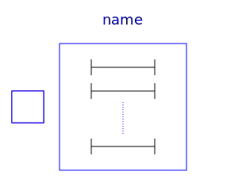
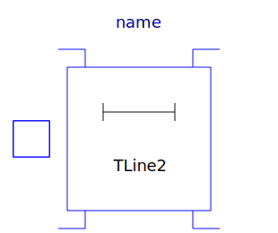

This package contains lossy and lossless segmented transmission lines, and LC distributed line models. The line models do not yet possess a conditional heating port.
| Name | Description |
|---|---|
| Lossy Transmission Line | |
|  M_OLine | Multiple OLine |
| Lossy RC Line | |
| TLine1 | Lossless transmission line with characteristic impedance Z0 and transmission delay TD |
|  TLine2 | Lossless transmission line with characteristic impedance Z0, frequency F and normalized length NL |
| TLine3 | Lossless transmission line with characteristic impedance Z0 and frequency F |